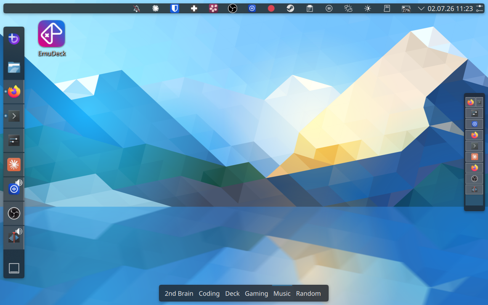

Steam Deck Dotfiles
Repository: Plasma-Deckery/steamdeck-dotfiles
An opinionated KDE Plasma desktop setup tuned for the Steam Deck's screen size and input methods. Managed via chezmoi.
The goal is a desktop that works well with a controller and no keyboard — clean, fast to navigate, and organised so you always know where things are.
Display scaling
The Steam Deck's internal display runs at 800×1280 at 90 Hz. At 1:1 scale, UI elements are too small for comfortable use at arm's length. The display is set to scale 1.1 in kwinoutputconfig.json — a small nudge that makes text and touch targets noticeably more comfortable without blurring the image the way integer scaling would.
The display is also rotated 270° (landscape from a portrait panel) and automatic brightness is enabled with a custom curve.
Layout
The panel layout is built around the Steam Deck's portrait-friendly screen:
- Dock on the left — app launcher and pinned applications
- Desktop switcher on the right — vertical spaces, always visible
- Taskbar at the top — system tray, clock, status icons
- Activity bar at the bottom — switch between named activity contexts

Activities and workspaces
KDE Activities act as separate desktops with their own sets of virtual spaces. Each activity has a dedicated purpose — Coding, Gaming, Music, 2nd-Brain, Deck, Random — so apps for different contexts never mix.
Within each activity, each virtual desktop holds at most one or two applications. Apps open in tiling mode and automatically fill the available space, so there is never a need to move or resize windows manually.
Window tiling
Kröhnkite provides dynamic window tiling — windows automatically arrange to fill the available space without manual resizing. maximized-window-gaps adds configurable gaps around tiled windows so the layout breathes a little on the small screen.
Window gaps are set to 7px between tiles (KWin screenGap*) and 40px outer margin (maximized-window-gaps) — giving the layout room to breathe on the small display.
Both are KWin scripts, installable with a single kpackagetool6 call — making them straightforward to automate.
Dynamic workspace management
A KWin script (Kyanite) ensures there is always exactly one free desktop available at the end of the list. When you close the last app on a space, that space is cleaned up automatically. When all spaces are occupied, a new one is created. Workspace management is fully automatic — you never have to create or delete desktops manually.
Focus follows mouse
The pointer focus policy is set so that moving the cursor to a window focuses it immediately, without clicking. On a small screen with a trackpad, this removes a significant source of friction.
kwriteconfig6 --file kwinrc --group Windows --key FocusPolicy FocusFollowsMouse
qdbus6 org.kde.KWin /KWin reconfigure
Focus stealing prevention
The Steam on-screen keyboard steals focus away from whatever you were typing into — keystrokes end up in the keyboard window instead of the input field. Two layers prevent this:
1. KWin global setting — Medium focus stealing prevention
kwriteconfig6 --file kwinrc --group Windows --key FocusStealing 1
qdbus6 org.kde.KWin /KWin reconfigure
This reduces how aggressively KWin lets windows steal focus, but it's not enough on its own for the Steam keyboard.
2. Custom KWin script — steam-keyboard-focus-fix
A small KWin script tracks the last active non-keyboard window. When the Steam keyboard appears (detected by resourceClass = "steam", resourceName = "steamwebhelper", skipTaskbar = true, window type Utility), focus is immediately returned to the previous window. This ensures keystrokes always land in the right place.
The script lives in ~/.local/share/kwin/scripts/steam-keyboard-focus-fix/ and must be enabled explicitly:
kwriteconfig6 --file kwinrc --group Plugins --key steam-keyboard-focus-fixEnabled true
qdbus6 org.kde.KWin /KWin reconfigure
Pointer acceleration
Global pointer acceleration is set to flat (no acceleration) — the cursor moves at a fixed speed proportional to physical movement. This feels more predictable on a trackpad than the default adaptive profile.
The Steam Controller itself uses adaptive acceleration with a scroll factor of 2× for the right stick scroll.
Power management
On battery:
- Display dims after 60 seconds of inactivity
- Display turns off after 60 seconds
- System auto-suspends after 5 minutes
- Power button suspends (not shuts down)
On AC: no auto-suspend, display locks before turning off.
Visual effects
A small set of KWin effects that improve usability without distracting:
- Dim inactive — unfocused windows are slightly dimmed (strength 10), including panels. Makes it immediately clear which window has focus.
- Hide cursor — cursor hides after 5 seconds of inactivity. Keeps the display clean when using the controller without touching the trackpad.
- Translucency — windows are 90% opaque while being moved or resized. Helps with spatial orientation on the small screen.
- Wobbly windows — subtle wobble on move (stiffness 18, move factor 16). Lightweight visual feedback.
- Blur — background blur at strength 10 behind translucent surfaces.
Window rules
A single KWin rule keeps Firefox Picture-in-Picture windows always on top across all activities and desktops. Without this, PiP windows disappear behind other windows whenever focus changes — on a small screen that means they're effectively lost.
Voice input
A RNNoise PipeWire filter-chain is configured for noise suppression during voice input. This is particularly useful outdoors. The config file lives in ~/.config/pipewire/filter-chain.conf.d/ — a single file copy and a PipeWire restart is all that's needed to apply it.
Works together with OpenWhispr for hotkey-activated speech-to-text.
Scriptability
Most of this setup can be applied automatically. The table below is a reference for a future guided setup:
| Setting | How to apply | Difficulty |
|---|---|---|
| Display scale (1.1) | Write kwinoutputconfig.json |
⚠️ Hardware-specific (eDP-1 EDID hash) |
| Focus follows mouse | kwriteconfig6 + reconfigure |
✅ Trivial |
| Focus stealing prevention | kwriteconfig6 (global setting) + custom KWin script |
✅ Easy |
| Pointer acceleration (flat) | kwriteconfig6 to kcminputrc |
✅ Trivial |
| Power management | kwriteconfig6 to powerdevilrc |
✅ Trivial |
| KWin effects (dim, hide cursor, blur…) | kwriteconfig6 to kwinrc + reconfigure |
✅ Easy |
| Window gaps | kwriteconfig6 to kwinrc + reconfigure |
✅ Easy |
| Kröhnkite / Kyanite / maximized-window-gaps | kpackagetool6 -t KWin/Script -i |
✅ Easy |
| RNNoise PipeWire filter | Copy config file, restart PipeWire | ✅ Easy |
| Firefox PiP window rule | Write to kwinrulesrc (merge-safe) |
⚠️ Careful |
| Panel layout | Replace plasma-org.kde.plasma.desktop-appletsrc, restart Plasma |
⚠️ Fragile |